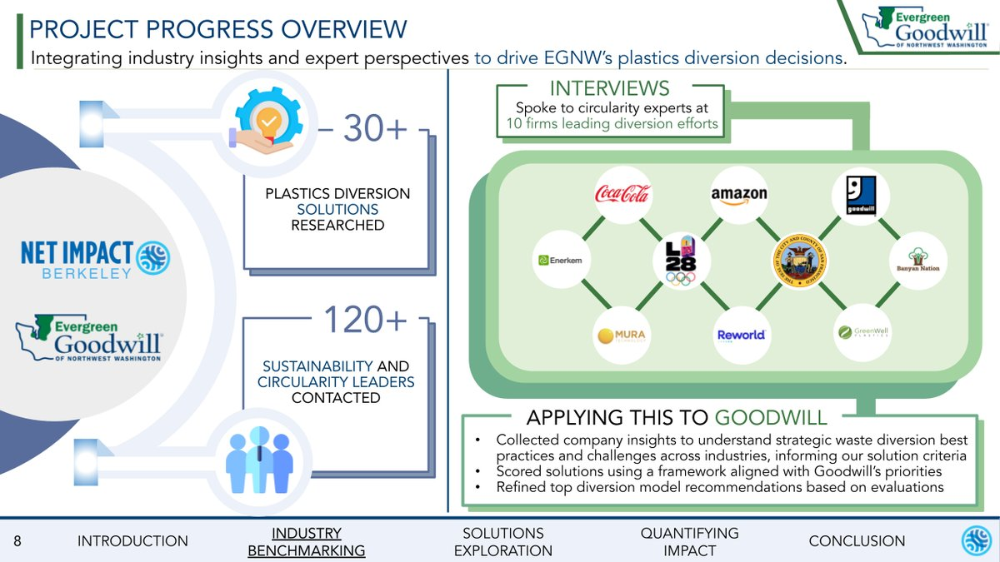
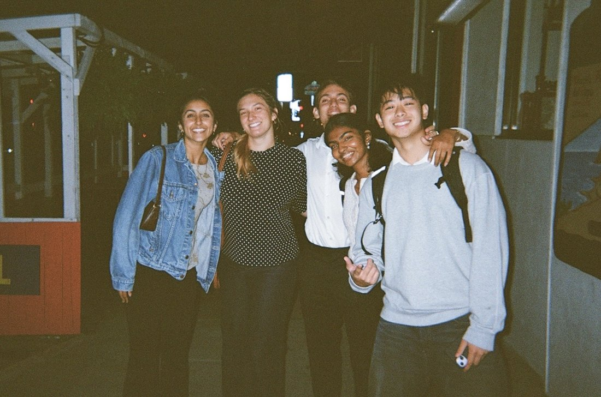

Evergreen Goodwill: Strategic Waste Diversion
My clearest end-to-end PM role: own an ambiguous problem, build the decision system, ship a recommendation leadership acts on.
Evergreen Goodwill sent over 200 tons of unsellable plastic toward landfill each year, with a projected hauling cost climbing past 26K dollars. No structured way existed to compare the flood of diversion vendors.
I interviewed 20-plus physical-AI and circularity leaders to map the landscape, then worked with C-suite stakeholders to prioritize the inputs that actually mattered to the decision.
An AI-powered vendor scoring framework that weighed cost, capacity, and proximity, automating a comparison across 30-plus vendors. I managed the team of 5 running evaluations and built interactive KPI dashboards for aftermarket transparency.
Recommended a single most-viable solution and presented to leadership.

